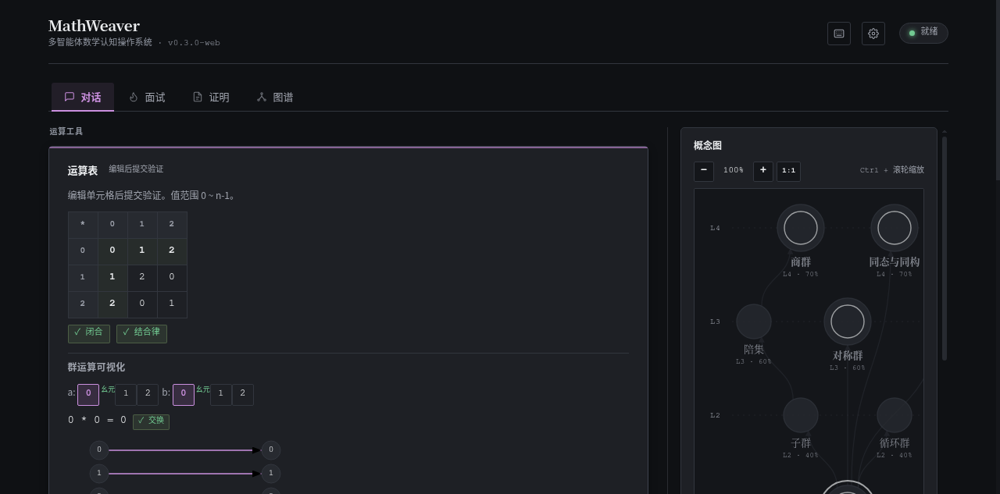
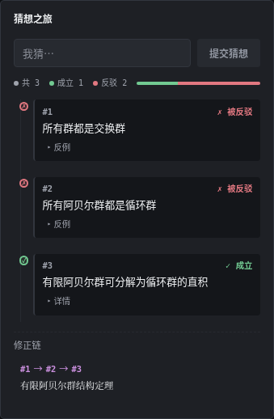
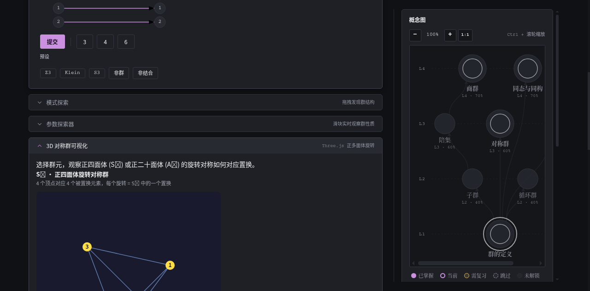
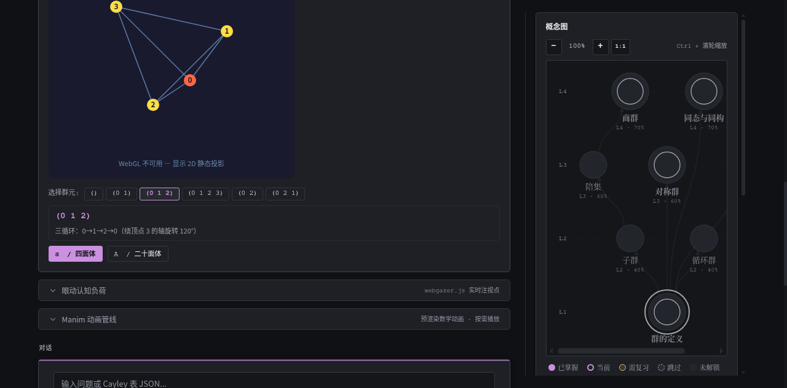
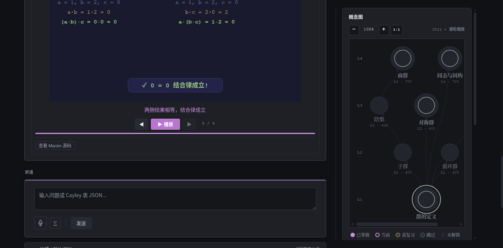
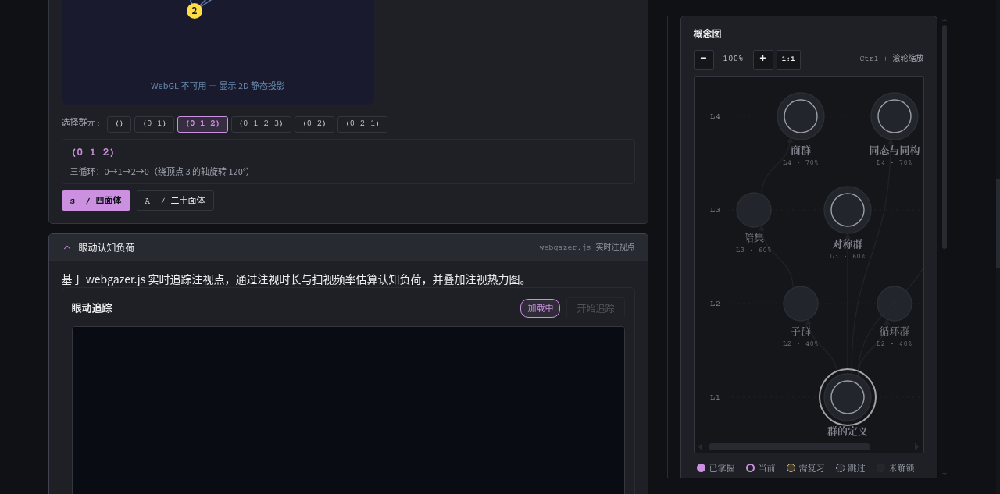

多智能体数学认知操作系统 · 技术提案
数学家 Bem 在 1985 年的《数学思维能力的训练》中做出了一个精确的诊断：传统教材呈现的是"打磨完毕的结果"，而非"发现结果的过程"。学生看到的证明是综合法——从已知公理出发一步步推导到结论——但这恰好是真实思维过程的逆过程。
分析的证明过程恰好是综合证明过程的逆过程。综合证明从已知条件走向结论；真实的数学发现却从结论出发，逆向追溯所需条件。当教材只呈现综合证明时，答案像是天上掉下来的。
— Bem,《数学思维能力的训练》, 1985
这不是个例。1958 年至 1975 年的"新数学运动"（New Math）做过一次大规模实验：受 Bourbaki 结构主义影响，它试图把集合论、群论等抽象结构直接塞给中学生。结果是灾难性的——结构被当成了起点而非终点。学生面对一堆公理和定义，不知道它们从哪里来，为什么要这样定义。
两段历史指向同一个结论：结构应该是学习者自己走到的终点，而不是被灌输的起点。
MathWeaver 的核心命题是：把被教材抹去的"发现过程"还给学习者。它不是再做一个"更聪明的题库"，而是构建一个让学生在猜想—反驳—修正的循环中自己走到数学结构的环境。这需要三件事同时成立：
哲学家 Lakatos 在《证明与反驳》中刻画了数学真正的生长方式：提出猜想 → 遭遇反例 → 修正猜想 → 再遇反例 → 收敛到定理。MathWeaver 把这个循环做成可交互的引擎——学生提出猜想，系统用形式化工具检验，给出反例或确认，再引导修正。猜想被反驳不是失败，而是发现结构的下一步。
判定一个猜想成立与否，不能靠语言模型的概率猜测。MathWeaver 用 SMT 求解器 Z3 作为形式化裁判：把群论结构编码成约束，Z3 给出确定性的"成立"或"找到反例"。语言模型负责自然语言理解与启发式引导，形式化引擎负责判定真伪——两者分工，判定权在形式化一侧。
因材施教的前提是知道学生当前的状态。MathWeaver 维护四个实时场：知识场（掌握度与最近发展区）、认知场（反应时与认知负荷）、情感场（焦虑与心流）、交互场（脚手架依赖与连续正确率）。四个场耦合驱动五种教学决策：继续、提示、降阶、挑战、收束。
计算工具（Wolfram Alpha）给出答案但不展示发现过程——这正是 Bem 批评的"答案从天上掉下来"。交互课程（Brilliant）走预设路径，靠预设答案判对错，学习者无法构造自己的证明。MathWeaver 不预设路径：学生自己提猜想、自己构造反例、自己走到定理。判定对错的不是预设答案，而是形式化验证引擎。
以下每一项能力都已实现并可运行，配图为应用真实截图，非概念图。后端服务与前端均在本地可启动验证。
学生的工作台分为三区：左侧是运算工具（可编辑的 Cayley 表、群运算可视化器），中间是对话面板，右侧是概念依赖图。编辑 Cayley 表后实时验证群公理（封闭性、结合律），并在概念图上标注掌握进度。

猜想引擎是 MathWeaver 的核心。学生用自然语言提出猜想，系统将其自动转译为 Z3 可判定的形式化命题，再由 Z3 给出确定性裁决。裁决分四个层级（L1 Z3 直解 → L2 LLM+Z3 → L3 LLM+启发式 → L4 LLM 兜底），优先使用形式化验证。
下方是真实的 API 调用结果——两个自然语言猜想，分别被 Z3 反驳和确认。这不是模拟输出，是 POST /api/conjecture/translate 的真实返回：
每一次裁决不只是给对错，还会生成苏格拉底式追问，引导学生从反例中自己发现结构的边界。下方的"猜想之旅"面板可视化了一段完整的猜想—反驳—收敛过程：三个猜想，两个被反例驳倒，最终收敛到有限阿贝尔群结构定理。

抽象的置换群对应具体的几何对称。学生选择一个群元（如三循环 (0 1 2)），正四面体（对应 S₄）会动画旋转到对应的对称位置——每个旋转就是 S₄ 中的一个置换。也支持正二十面体（对应 A₅）。这把"置换"从符号变成可看见、可操作的空间变换。


当运行环境不支持 WebGL（如无头浏览器），组件自动降级为 SVG 二维投影，标注"WebGL 不可用 — 显示 2D 静态投影"，保证内容始终可读。
数学动画能把"为什么成立"可视化。后端用 Manim 预渲染群运算、结合律、单位元、逆元、交换律反例等动画，前端按需播放。每帧对应一个推理步骤，学生可逐帧前进、查看 Manim 源码。下方截图展示结合律验证的第 4 帧：左侧 (a·b)·c 与右侧 a·(b·c) 结果相等，标注"结合律成立"。

当系统缺少 Manim 运行依赖（libcairo 等）时，管线自动生成 SVG 动画帧作为替代，前端播放逻辑不变。
认知负荷不能只靠反应时推断。MathWeaver 集成 webgazer.js，用普通摄像头实时追踪注视点，通过注视时长与扫视频率估算认知负荷，叠加注视热力图。这为四场引擎中的"认知场"提供了除反应时之外的第二个独立信号源。

MathWeaver 采用前后端分离架构，后端是认知引擎的核心，前端是交互界面。
| 决策 | 选择 | 理由 |
|---|---|---|
| 判定真伪 | Z3 形式化验证 | 确定性裁决，不依赖 LLM 概率猜测 |
| Agent 编排 | 单写者模式 | 避免多 Agent 并发写状态的竞态 |
| 降级策略 | 逐层 fallback | WebGL→SVG、Manim→SVG、LLM→规则，保证可用性 |
| Web 试用 | Mock API shim | 零安装即开即用，降低首次接触成本 |
无需 LLM 密钥即可运行：后端内置 Mock LLM Client，前端内置 Web API Shim。两条启动路径：./START_HERE.sh（Docker 或本地）或单独启动后端 uvicorn + 前端 vite。
无论走到哪一步，有一个原则不变：判定真伪的权力在形式化引擎，不在语言模型；展示的是发现过程，不是打磨完毕的结果。结构是终点，不是起点。